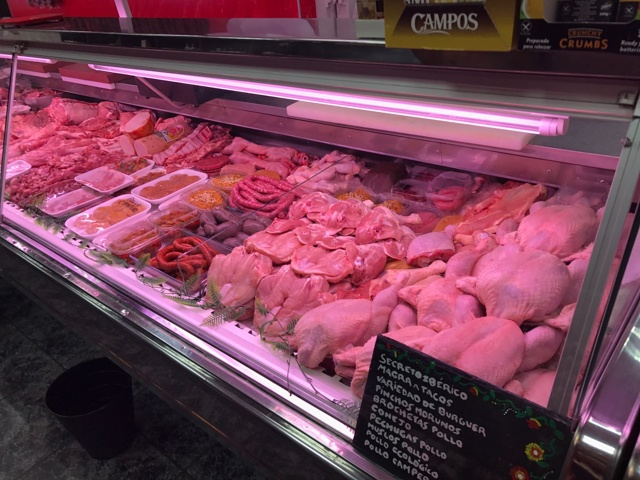

<!-- Main -->
<div id="main-wrapper">
    <div class="container">
        <div class="row 200%">
            <div class="4u 12u(medium)">

                <!-- Sidebar -->
                <div id="sidebar">
                    <section class="widget thumbnails">
                        <h3>Ven a Conocernos</h3>
                        <div class="grid">
                            <div class="row 50%">
                                <div class="6u"><a href="#" class="image fit"></a></div>
                                <div class="6u"><a href="#" class="image fit"></a></div>
                                <div class="6u"><a href="#" class="image fit"></a></div>
                                <div class="6u"><a href="#" class="image fit"></a></div>
                            </div>
                        </div>
                        <a href="#" class="button icon fa-file-text-o">More</a>
                    </section>
                </div>

            </div>
            <div class="8u 12u(medium) important(medium)">

                <!-- Content -->
                <div id="content">
                    <section class="last">
                        <h2>El mejor trato</h2>
                        <p>
                            Estamos en <strong>Santa maria de gracia</strong>, somos una familia de carniceros y mataderos de Murcia, <a href="http://html5up.net">Carnicería Felipe</a>.
                            Verti is released under the <a href="http://html5up.net/license">Creative Commons Attribution license</a>, so feel free to use it for any personal or commercial project you might have going on (just don't forget to credit us for the design!)
                        </p>
                        <p>Phasellus quam turpis, feugiat sit amet ornare in, hendrerit in lectus. Praesent semper bibendum ipsum, et tristique augue fringilla eu. Vivamus id risus vel dolor auctor euismod quis eget mi. Etiam eu ante risus. Aliquam erat volutpat. Aliquam luctus mattis lectus sit amet phasellus quam turpis.</p>
                        <a href="#" class="button icon fa-arrow-circle-right">Continuar Leyendo</a>
                    </section>
                </div>

            </div>
        </div>
    </div>
</div>
